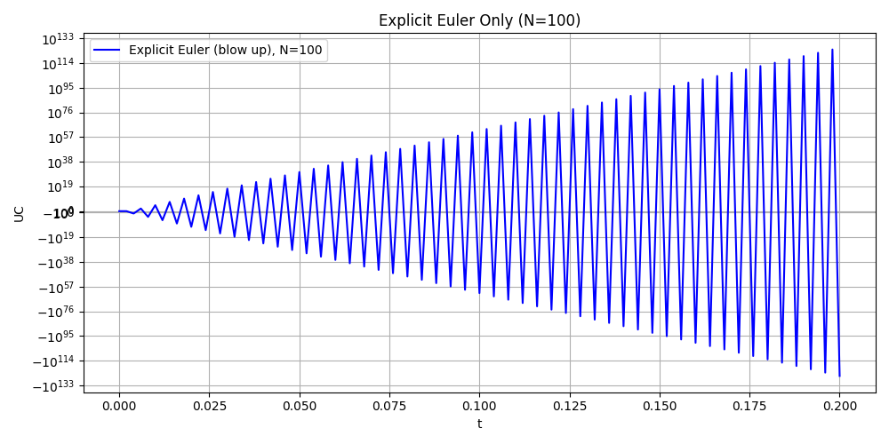
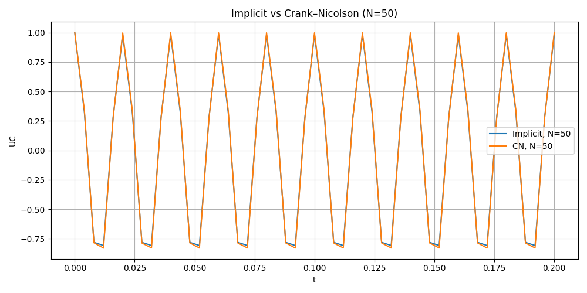

Exercise 17.4.1#
Q4: Question Review#
We already have the main funtion
with initial condition: \(U_c(0) = U_0(0)\)
and assumption:
\(U_c(t)\) is the unknown quantity
\(U_0(t) = cos(100*pi*t)\)
R = 100
C = \( 10 ^{-6}\)
Q4.1 : Rewrite the system to antonomous form#
We see that in the function, there are some terms realted to t. Now we define a new vector:
then the new vecotr:
Finally we get the autonomous ODE:
with initial value
Q4.2 : Numerically solve the problem with 3 methods#
In order to compare the methods: Explicit Euler, Implicit Euler and Crank Nilcolson method, add three head files: RCRHC.hpp RCCircuit.hpp and RHS.hpp
Modify the previous main document, change the model from mass-spring to RC circuit. The main files are xian.cpp yin.cpp and cn.cpp. After getting the csv files, plot and analyze.
Attention: Here we choose different step N = {50, 100, 200,300} and T = 0.2 to compare. In this case, the explicit method is not stable and the numerical solution blows up. So we put explicit euler method seperately and add log-log plot to see the error.
Plot#
Explicit Euler method in different time step (BLOW UP)




Implicit Euler vs Crank Nicolson in different time step



Error Analysis


Conclusion#
Explicit Euler is unstable for the RC circuit. The step sizes Δ𝑡=𝑇/𝑁 violate the stability limit Δ𝑡<2𝑅𝐶, leading to rapid blow-up.
Implicit Euler is stable but overly damped. As an A-stable first-order method, it does not diverge, but it introduces strong numerical dissipation.
Crank–Nicolson gives the best results. It is A-stable, second-order accurate, and preserves oscillation amplitude without artificial damping.
Convergence behavior: Explicit Euler → 1st order (unstable here) Implicit Euler → 1st order (stable but dissipative) Crank–Nicolson → 2nd order (accurate and stable)
Overall: For this stiff RC system, Crank–Nicolson is the best method.